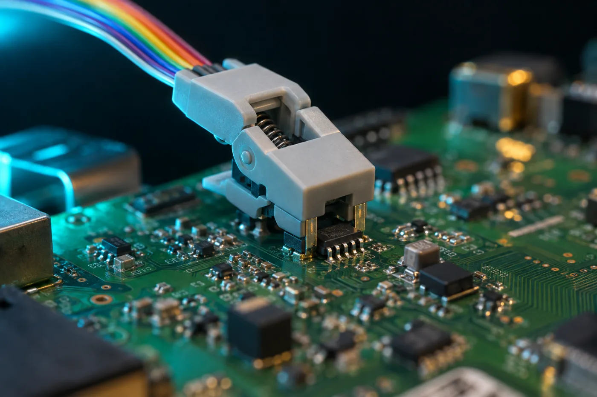

Mode 1 · T-CON division, mapping, mirror
Fix panel division, LVDS mapping and mirror.
Auto-detects SPI flash or I²C EEPROM, then corrects panel division (1↔2), JEIDA/VESA LVDS bit mapping and image mirror. A single byte, written and verified.
- SPI flash
- I²C EEPROM
- Auto-detect